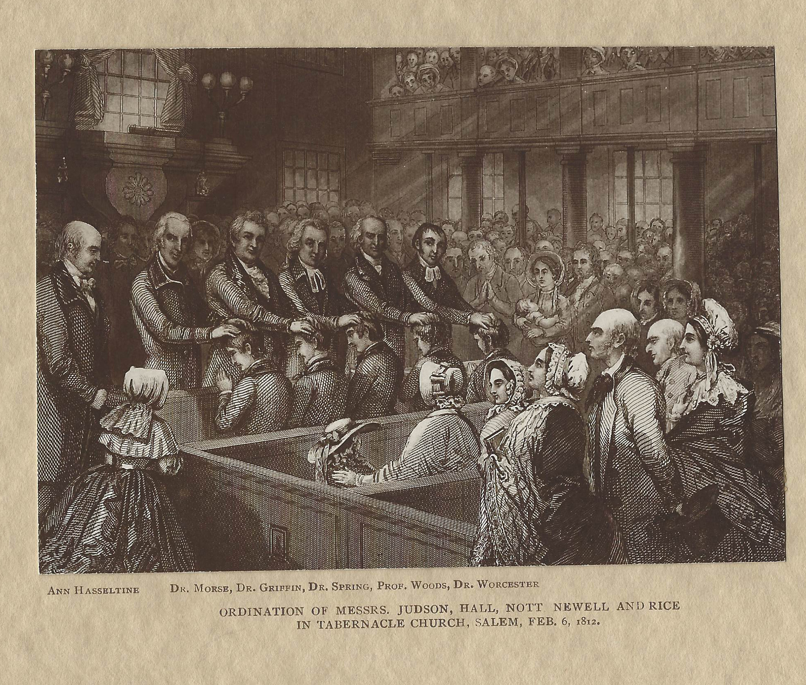

Tabernacle reached a great moment in its history when, on February 6, 1812, Adoniram Judson and five other New England men were commissioned as the first American foreign missionaries. Tabernacle’s minister at that time, Rev. Dr. Samuel Worcester was a leader in the growing world mission movement. Salem was also the center of the Far East trade and Salem port was the destination of most ships that went to the Orient, which is likely why this commissioning was held here. It was the first act of the American Board of Commissioners for Foreign Missions, and, because Adoniram Judson changed his denomination half way across the ocean, it brought into being the world mission work of two denominations: Congregationalists (now United Church of Christ) and American Baptists.